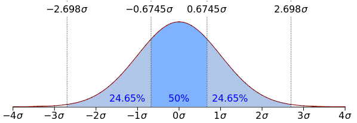

Chapter 3 Distributions
3.1 Scales on Measurement
- Nominal scale: These are categorical values that has no relationship of order or rank among them. (e.g. colors, species)
- Ordinal scale: These are categorical values that has relationship of order or rank among them (e.g. military ranks, competiton results). Though the relative order has no defined magnitude (e.g. Champion can get 40 points, runner up 39 and third place 30).
- Interval scale: There is a numerical order but the difference can only be defined in intervals, since there is no absolute minimum. We cannot compare in relative values. For instance, we cannot say 10 degree celsius is twice as hot as 5 degree celsius; what about -5 vs +5?
- Ratio scale: Scale with an absolute minimum. (e.g. If I have 50TL and my friend has 100TL, I can say that she has twice the money that I have.) Height, weight, age are similar examples.
See more on https://en.wikipedia.org/wiki/Level_of_measurement. (p.s. Wikipedia wasn’t banned when I prepared these notes)
3.2 Infinity
The concept of infinity is very broad. Currently, you just need to keep the distinction of countable and uncountable infinities in mind.
- Countably infinite: 1, 2, 3, 4, … (e.g. natural numbers, integers, rational numbers)
- Uncountably infinite: 1, 1.01, 1.001, 1.0001, 1.00001, … (e.g. real numbers)
How many real numbers are there between 0 and 1?
3.3 Descriptive Statistics
Here are brief descriptions of mean (expectation), median, mode, variance, standard deviation, quantile.
Mean: \(\bar{X} = \sum_i^N X_i\)
Median: Let’s say \(X_k\) are ordered from smallest to largest and there are \(n\) values in the sample. Median(\(X\))\(=X_{(n+1)/2}\) if n is odd and (usually) Median(\(X\))\(=\dfrac{X_{(n/2)} + X_{(n/2+1)}}{2}\).
Quantile: On an ordered list of values for quantile (\(\alpha\)) provides the \((\alpha*n)^{th}\) smallest value of the list. For instance, if \(\alpha = 70\% = 0.7\) quantile value is the 7th smallest value in a list of 10 values. \(\alpha = 1\) means the maximum. Quantile is an important parameter in especially statistics.
Mode: \(X_k\) with the highest frequency in the sample. In a sample of (\(1,2,2,3,4,5\)), \(2\) is the mode.
Variance: \(V(X) = \dfrac{\sum_i^N (X_i - \bar{X})^2}{n-1}\)
Standard Deviation: \(\sigma(X) = \sqrt{\dfrac{\sum_i^N (X_i - \bar{X})^2}{n-1}}\)
set.seed(231)
#Let's pick 10 values from the numbers between 1 and 50.
numbers <- sample(1:50,10,replace=TRUE)
#The sorted version of the numbers
sort(numbers)## [1] 1 9 15 16 16 18 26 31 32 35## [1] 19.9## [1] 19.9## [1] 17## 77.77778%
## 31## 0%
## 1## 100%
## 35## numbers
## 1 9 15 16 18 26 31 32 35
## 1 1 1 2 1 1 1 1 1## [1] "16"## [1] 118.7667## [1] 118.7667## [1] 10.89801## [1] 10.898013.4 Random Variable
Random variables are the abstractions of uncertain events so that we can generalize events in formal functions instead of explicitly enumerating the outcomes. For instance, assume \(X\) is the number of tails in 2 coin tosses.
\[\begin{align} P(X = 0) &= P(\{H,H\}) = 1/4 \\ P(X = 1) &= P(\{H,T\},\{T,H\}) = 2/4 \\ P(X = 2) &= P(\{T,T\}) = 1/4 \\ \end{align}\]\(X\) can take values 0, 1 and 2. \(X\) is a discrete random variable.
There are also the continuous random variables. Continuous random variables are usually defined in intervals instead of individual values. For instance, define \(Y\) as any real number between 0 and 1 and and all values within the interval are equally probable (i.e. uniform distribution).
\[\begin{align} P(Y \le 0.25) &= 1/4 \\ P(X \le 0.5) &= 2/4 \\ P(X \le 0.75) &= 3/4 \\ \end{align}\]3.5 Fundamental Concepts
There are several fundamental concepts to keep in mind.
Probability Mass Function (pmf): pmf is the point probability for discrete distributions (i.e. \(f(x) = P(X = x)\)). For instance \(P(X = H) = 1/2\), \(P(X = T) = 1/2\).
\[\sum_i^n f(x_i) = 1\]

- Probability Density Function (pdf): pdf is the interval probability for continuous distributions (i.e. \(f(x) = P(a < X < b) = \int_a^b f(x) dx\)). Since almost all point probabilities in continuous distributions are 0 (due to infinity), intervals.
\[\int_{-\infty}^{\infty} f(x) dx = 1\]

- Cumulative Distribution Function (cdf): cdf is the cumulative probability for all values smaller than \(x\) (i.e. \(F(x) = P(X \le x)\)). For the coin toss an example cdf would be two or less tails (\(P(X \le 2)\)).
Main relationship between cdf and pdf is (\(F(X \le a) = \int_{-\infty}^a f(x) dx\)).
- Expected Value (\(E[X]\)): Expected value of a probability distribution is calculated as follows.
\[\mu = E[X] = \sum_i^n x_i f(x_i)\] for discrete distributions.
\[\mu = E[X] = \int_{-\infty}^{\infty} xf(x)dx\] for continuous distributions.
Example: Calculate the expected value of number of tails in two coin tosses.
\[\begin{align} E[X] &= \sum_i^n x_i f(x_i) = 0 * P(X=0) + 1 * P(X = 1) + 2 * P(X = 2) \\ &= 0 * 1/4 + 1 * 1/2 + 2 * 1/4 \\ &= 1 \end{align}\]- Variance (\(V(X)\)): Variance is calculated as follows
\[V(X) = E[(X - \mu)^2] = \sum_i^n (x_i - \mu)^2 f(x_i)\] for discrete distributions.
\[V(X) = E[(X - \mu)^2] = \int_{-\infty}^{\infty} (x - \mu)^2 f(x) dx\] for discrete distributions.
Variance can also be calculated as \(V(X) = E[X^2] - (E[X])^2\).